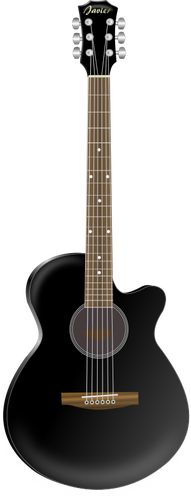

Ejemplo Filtros
Escala de grises
He aplicado el filtro grayscale(1) para poner la siguiente imagen en escala de grises.
Sepia
He aplicado el filtro sepia(1) para poner la siguiente imagen en sepia.
Contraste
He aplicado el filtro contrast(20) para poner la siguiente con más contraste de color.